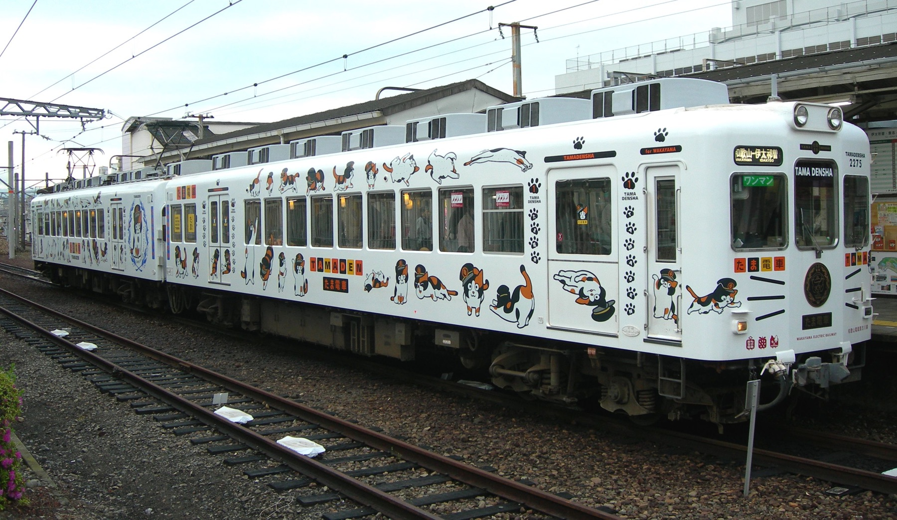
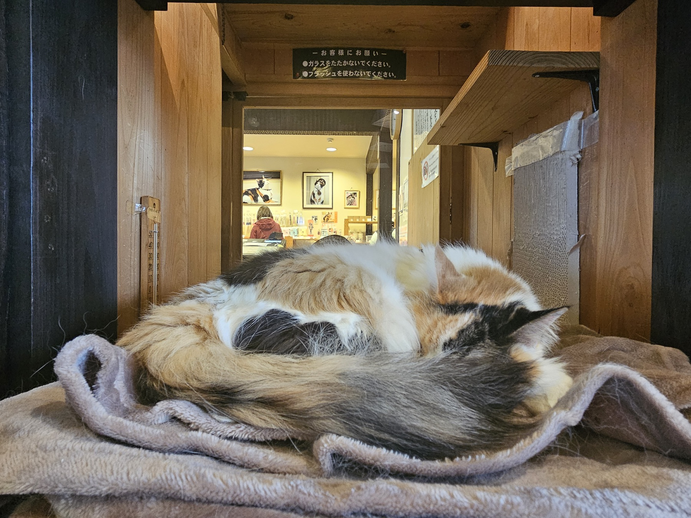

Japan with
Japan with
At the end of a 14.3-kilometer local line in Wakayama Prefecture, a stationmaster once accepted payment in cat food. She had no authority over signals, never checked a ticket and regarded her custom cap with understandable suspicion. Still, Tama was not an internet nickname. Wakayama Electric Railway formally appointed the calico cat stationmaster of Kishi Station on January 5, 2007.
The easy version of the story says a cute cat “saved a railway.” The better version begins before the hat: with a line threatened by declining ridership, residents who refused to lose it, a private operator willing to experiment, and a cat whose home happened to sit beside the platform. Tama became the face of that collaboration—and changed what a rural station could be.
A railway in danger, not an empty publicity stunt
The Kishigawa Line links JR Wakayama Station with Kishi, crossing suburbs and farmland through 14 stations. Its previous operator, Nankai Electric Railway, announced that it would withdraw. Local supporters organized, governments looked for a successor, and the Okayama-based Ryobi Group established Wakayama Electric Railway to begin operating the line in April 2006.
Kishi Station was unstaffed. Near it, grocery owner Toshiko Koyama cared for Tama and other cats. When railway reorganization meant the cats’ shelter would have to move, company president Mitsunobu Kojima was asked for help. His unconventional answer was not merely to tolerate Tama but to make her the stationmaster. Her initial “salary” was a year’s supply of food; her duty, the railway says, was to welcome passengers.
That sequence matters. A corporation did not manufacture a random animal celebrity first and search for a town later. Tama was already part of the station’s everyday landscape. The appointment gave a memorable public role to a relationship among cat, caretaker, passengers and place.
What changed after the cap went on
Attention arrived quickly. The railway says annual ridership rose from 1.92 million at the beginning of its rebuilding to 2.15 million, crediting Tama alongside citizen and government support. Those figures do not prove that one cat caused every additional journey, and “Tama single-handedly saved the line” is too neat. They do show why she became a durable symbol rather than a one-week stunt.
Her promotions followed railway-style logic with a wink: super stationmaster, operating officer, then company vice president and acting president. More importantly, the experience expanded beyond her glass-fronted office. Industrial designer Eiji Mitooka created the Tama Train, filled with feline motifs, and the rebuilt Kishi Station opened in 2010 beneath a cat-shaped roof. The building contains a café and shop, so the destination begins before a visitor reaches the cat.

This is where the project becomes more interesting than novelty. The cat was not a decoration attached to an ordinary commute; Tama’s identity was translated into rolling stock, architecture, ritual and souvenirs. Visitors gained several reasons to ride the whole line, while everyday passengers kept a transport service. Tourism and utility shared the same rails.

The job outlived its first stationmaster
Tama died in June 2015 at age 16. The railway named her Honorary Eternal Stationmaster, and she is remembered at Tama Shrine on Kishi Station’s platform. The mixture of corporate titles, memorial ritual and sincere grief may feel surprising outside Japan. It should not be reduced to a claim that people literally expected a cat to manage trains. The ceremony expressed gratitude to an animal whose presence had become inseparable from a community campaign.
Nitama—“Tama Two”—succeeded her and served until her death in November 2025. In January 2026 the railway appointed Yontama (“Tama Four”) stationmaster at Kishi. Gotama now serves as stationmaster at Idakiso and deputy at Kishi, while young Rokutama is a candidate in training. The missing “third” is part of the playful genealogy: Sun-tama-tama remained with Okayama Electric Tramway.

Succession turned a charming accident into an institution, but the animals’ welfare must come before a visitor’s photograph. The cats work limited schedules inside protected offices, take days off, and may be absent because of health or temperature. They are not petting attractions. Check the railway’s official cat-stationmaster page immediately before traveling and accept that meeting one is never guaranteed.
How to make the journey responsibly
Field notes · checked November 2, 2026
- Start
- Use Wakayama Station’s Platform 9. The Kishigawa Line is separate from JR ticketing.
- Payment
- IC cards are not accepted on the line. Take a numbered ticket when required and pay the fare box on exit. The official one-day pass is ¥1,200 for adults and ¥600 for children.
- Best route
- Ride to Kishi, then stop at Idakiso on the return. Check both the cats’ duty calendar and the special-train timetable; vehicle assignments can change without notice.
- Time and manners
- Allow roughly half a day. Do not use flash, tap the glass, wake a sleeping cat or expect physical contact. Café, shop and staff hours can differ from train service.
From Osaka, reaching Wakayama first adds significant travel time, so this is a deliberate excursion rather than a quick station selfie. Crowds can build on weekends and ceremonies. Summer heat and typhoon disruption are real constraints. The line remains public transport for residents: leave doors, platforms and seats usable, and never delay boarding for a photograph.
Look beyond the cat. Notice the strawberry and plum themes tied to local products, the compact rural stations, the shift from JR to a small one-person-operated railway, and Mitooka’s use of wood, color and visual jokes. The best visit explains why Tama mattered: she gave outsiders a reason to notice a line that residents had already decided was worth defending.
Want to keep those railway words? Japanese Training Lab offers free web practice with no signup required. Or watch Yuji walk through present-day Japan on TikTok LIVE and learn through play in DraMap.
Reporting sources
- Wakayama Electric Railway: History of the Kishigawa Line — route history, ridership and 2026 succession.
- Wakayama Electric Railway: Cat stationmasters — current roles and profiles.
- Wakayama Electric Railway: Kishi Station — facilities, duty calendar and train links.
- Wakayama Electric Railway: One-day pass — current price and sales points.
- Wakayama Electric Railway: Boarding and alighting — numbered tickets, fare boxes and no IC cards.
- Government of Japan: The Station with a Cat as Its Stationmaster — official English background and station design.
- Wakayama Prefecture official tourism site — visitor overview.
Operational information was checked November 2, 2026. Schedules, prices, rolling stock and cat appearances can change; verify on the railway’s official site. Interpretation and story selection are Japan Unfolded’s editorial judgment.

See the Japan that is still moving.
Yuji edits Japan Unfolded and created DraMap. Walk real streets on TikTok LIVE, then learn Japanese while playing on iPhone.
Japan Unfolded is independently edited by Yuji Shimizu, creator of DraMap. The app link is publisher promotion; editorial claims are sourced above.